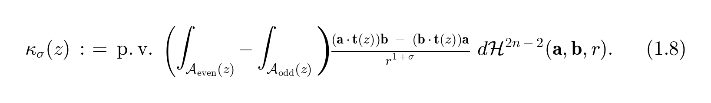

Classical curvature κ(z) at a point z measures the curve’s infinitesimal bending there: for an arc-length parametrization, κ = |dT/ds| — the magnitude of the rate of change of the unit tangent (equivalently κ = |γ′ × γ″|/|γ′|3 in any parametrization), pointing along the principal normal.
Instead of the infinitesimal neighborhood, nonlocal curvature κσ(z) integrates over the (2n−2)-dimensional space of disks in ℝn: every point of the domain represents a disk D of radius r with a given center offset and orientation. Each disk’s contribution is weighted by r(−1−σ), multiplied by the parity of the disk’s intersection with the curve (+1 for an even number of intersections, −1 for odd). Notice this emphasizes small disks. The result is a vector at z that sees the whole curve.

This tool implements the case n = 3: curves in three-space, with a 4-dimensional integration domain (radius + disk position/orientation). The integral is evaluated by Monte Carlo — the r-integral splits at a singularity radius rs into a near-field head (fixed-radius sampling, linear extrapolation to r = 0) and a far-field tail (Pareto sampling), with disk parameters sampled uniformly.
The point of the tool is the σ → 1 limit: the rescaled vector κ̃σ := (1−σ)κσ/c3, with c3 = π2√2 ≈ 13.96, converges to the classical curvature vector as σ → 1. That convergence is the subject of Dan Zimmerman’s paper “The asymptotics of nonlocal curvature for curves.” The paper operates in full generality rather than focusing on ℝ3, but since we live in three dimensions it’s easiest to visualize ℝ3.
The main 3D view shows the curve, the evaluation point z, and the classical vs. rescaled nonlocal curvature vectors side by side. The σ-sweep plot traces |κ̃σ| against σ, with the exact circle formula and the κ(z) limit line for reference.